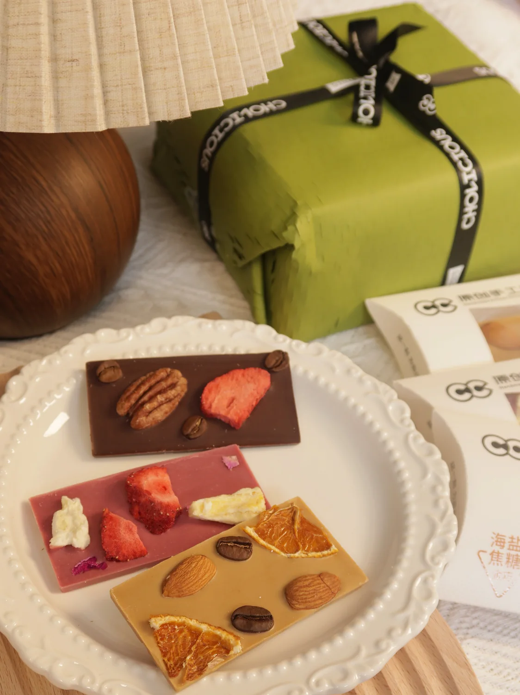

真实问题
研发回答“能不能做好”，品牌还要回答“消费者为什么现在就选你”。
巧克力里有很多只有研发看得见的差异：原料、配方、口感、工艺。消费者站在货架前或打开商品页时，却只会给你几秒钟。馋巧巧要做的，不是把专业知识全部倒给他们，而是把差异变成一个容易理解的选择。

为什么做
我想做的，不是一块只有同行才懂的巧克力。
我在荷兰学习食品相关专业，之后进入巧克力研发，也持续去法国、比利时理解产品和消费场景。真正开始做馋巧巧时，我关心的是：普通人不需要先上一堂巧克力课，也能凭口感、原料和场景，选到自己愿意吃、愿意分享的一块。
这也是我今天做产品咨询时仍然坚持的事：先尊重产品事实，再把专业翻成消费者能做出的选择。
三个关键判断
不是把产品、品牌和渠道分开做，而是让它们回答同一个购买理由。
-
01
产品定义
先按消费场景组织产品，不让每块巧克力各说各话。
自己随手吃、多人分享、正式送礼，需要的分量、组合和表达都不同。产品系统因此有单份、组合与礼盒入口，而不是只按口味罗列。
动作与产物：产品规格、组合方式、礼盒形态 -
02
品牌表达
把研发语言翻成第一眼能理解的原料与口感。
消费者先看到真实原料、口感和适合的场景，再决定要不要理解更多工艺。包装与画面负责降低选择成本，不替产品制造空洞的高级感。
动作与产物：包装系统、产品摄影、商品页表达 -
03
口碑与履约
线下让人先尝到，线上服务把这份喜欢接住。
馋巧巧的购买链路，是消费者在线下尝到喜欢，再把产品推荐给朋友。推荐发生后，线上购买、运输处理、礼盒和手写卡片共同决定这份信任能不能继续。
动作与产物：线下试吃、线上商品、运输处理、手写卡片
产品证据
礼物感不能只停在巧克力里，还要一直到收货那一刻。
朋友推荐带来的是一份已经存在的信任。产品、礼盒和随单卡片，要一起让收件人感到这份推荐值得。


经营验证
口碑带来第一单，运输不能让信任断掉。
用户确认的一段完整经营年度内，“融化”相关消费者投诉记录为 0。它只证明我们守住了纯脂巧克力线上交付中最容易出问题的一环，不能单独证明整条体验都优秀；具体年份与订单基数未在本页公开，也未折算投诉率。
- 线下品尝
- 先让消费者真正尝到产品，而不是只靠内容解释
- 朋友推荐
- 消费者把自己觉得好的产品推荐给朋友，形成口碑转介绍
- 运输处理
- 纯脂巧克力对温度敏感；用户确认的一段完整经营年度内，融化相关投诉记录为 0
- 礼盒与卡片
- 用礼盒承接价格与送礼场景，再把购买者想说的话随巧克力一起送到
可迁移能力
做过自己的品牌以后，我知道应该先替老板接住哪一层。
不是只看某一张页面，而是先判断什么值得做，再把不同执行者带到同一个结果。
先判断什么值得做
同时看产品事实、消费者选择、成本和交付限制，再决定哪个问题最该先解决。
把抽象方向做成具体交付
产品组合、包装、摄影、页面与线下物料彼此一致，也让不同执行者接得住。
把不同执行者带到同一个结果
把目标、负责人、节点、证据和验收接起来，让事情不再散在老板脑子和聊天记录里。